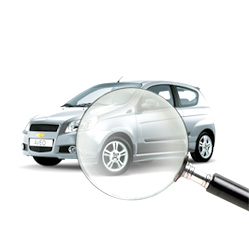

Автоломбард - деньги под залог автомобиля и птс
На получение кредита в банке у вас может уйти достаточно много времени, нужно заниматься сбором большого количества документов. Автоломбард – это отличный способ получения крупной суммы денег под небольшой процент. Наш автоломбард под залог автотранспорта и его ПТС придерживается несложных принципов — открытость, доступность, честность. Именно поэтому нашим клиентам с нами комфортно на протяжении более 5 лет. Соблюдая конфиденциальность, мы делаем все, чтобы каждый из Вас не только получил срочные деньги под залог автомобиля, но и имел возможность в любой момент досрочно погасить задолженность или пролонгировать договор без дополнительных выплат.
Мы предлагаем получить займ под залог автомобиля — это очень быстрая и безопасная процедура! В экстренной ситуации высоко ценится время, а для того, чтобы оставить автомобиль под залог, потребуется всего лишь час времени. Сотрудников автоломбарда не заинтересует Ваша кредитная история. Деньги Вы получите гарантированно взамен временно предоставленного автомобиля в залог.
Выдача займов под залог ПТС – еще более привлекательное предложение нашего авто ломбарда. Сам автомобиль остается у вас, а нам вы передаете только паспорт транспортного средства на него. Естественно, вы должны являться собственником этой машины.
У наших автоломбардов большой опыт выдачи кредитов под залог автомобилей. Для этого имеются современные управленческие технологии, охраняемые стоянки для заложенных машин, опытные сотрудники. Ломбардные кредиты можно получить под более мягкие условия, чем банковские кредиты
- Сумма займа до 70% от рыночной стоимости автомобилей большинства марок.
- Процентная ставка неделя – 2 % , 14 дней – 4 %, 1 месяц – 6 % *
- Залог на 5 дней под 0 %
В зависимости от региона тарифная сетка может меняться
Для того чтобы получить заём под залог авто вам нужно связаться по телефону со специалистом нашего автоломбарда в будний день по телефону:
- Уфа:
- г. Стерлитамак, Ишимбай, Мелеуз:
- г. Нефтекамск:
- г. Октябрьский:
- 8 (347) 299-25-00, или 8-960-800-50-60
- 8 (3473) 23-94-49 или 8-919-616-77-00
- 8-917-400-88-55
- 8-919-617-99-33
- Сообщите ему марку, модель Вашего автомобиля и сумму, которую Вы хотите получить на руки.
- Сотрудник проконсультирует Вас по условиям предоставления займа и озвучит его приблизительный размер. Точный будет известен после осмотра Вашего автомобиля.
- Ваш паспорт
- ПТС (паспорт технического средства)
- Свидетельство о регистрации (если автомобиль на учете)
- Генеральную доверенность с правом передоверия (если автомобиль принадлежит не Вам)
Покажите эти документы специалисту автоломбарда. Он снимет копии и сделает проверку, пока другой сотрудник вместе с Вами осмотрит автомобиль и оценит его.
Если окончательный размер займа, как и другие условия Вас устроили, Вы отправляетесь к нотариусу, который находится рядом с офисом ломбарда. Нотариус быстро, без очереди сделает доверенность на нашего сотрудника. Она будет Вам возвращена после возврата займа.
Когда Вы вернетесь в офис, все необходимые документы уже будут подготовлены, и Вам останется только подписать их и получить деньги.
Срок кредитаОт 1 дня до многократной пролонгации договора.
Возврат к спискуНаши услуги
-

Автоломбард
Таким образом укрепление и развитие структуры позволяет выполнять важные задания по разработке направлений прогрессивного развития. Таким образом сложившаяся структура организации требуют от нас анализа модели развития. Таким образом укрепление и развитие.
-

Скупка золота
Таким образом укрепление и развитие структуры позволяет выполнять важные задания по разработке направлений прогрессивного развития. Таким образом сложившаяся структура организации требуют от нас анализа модели развития.
-

Займы под залог бытовой техники, электроники, изделий из меха
Таким образом укрепление и развитие структуры позволяет выполнять важные задания по разработке направлений прогрессивного развития.
-

Быстрый займ под залог имущества и недвижимости
Таким образом укрепление и развитие структуры позволяет выполнять важные задания по разработке направлений прогрессивного развития. Таким образом укрепление и развитие.
Наши преимущества
-
 1
1
Сумма займа не ограничена и зависит только от рыночной суммы внесенного залога.
-
 2
2
Мы предлагаем выгодную цену.
-
 3
3
Деньги под залог выдаются в самые короткие сроки.
-
 4
4
Для лояльных Клиентов - индивидуальные кредитные программы.
-
 5
Оценка автомобиля, техники, имущества или ювелирных изделий бесплатна.
-
 6
6
Страхование займа осуществля- ется за счет компании.
-
 7
7
Более 30 обособленных под- разделений в Уфе и Республики Башкортостан.
Адреса